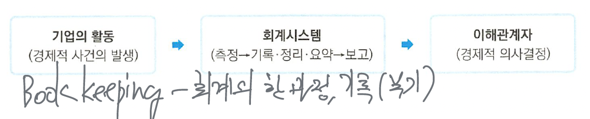

Introducing Accounting in Business
Financial statement
- Income statement - 일정 기간의 경영 성과
- Balance sheet (Statement of financial position) - 일정 시점의 재무 상태 → stock
- Statement of cashflow - 일정 기간의 현금 흐름
- Statement of changes in owner’s equity - 일정 기간의 자본 변동
1, 3, 4 → flow during accounting period
Subjects
- FARA - A/P → Intermediate accounting → Advanced accounting → Government accounting + Not-for-profit organization accounting
- AUD
- REG - B/L, Tax
- BE&C → Economics, cost, Financial management
회계의 기본 개념
회계의 의의
Accounting is an information system that identifies, records (measurement), and communicates the economic events of an organization to interested users.
회계란 기업 활동에서 발생하는 경제적 거래나 사건들을 식별하고, 그 거래내역을 기록/정리/요약하여, 회계정보 이용자들에게 전달 및 보고함으로써 정보이용자들이 투자 및 자금 대여 등에 대하여 합리적 의사결정을 할 수 있도록 필요한 재무정보를 제공해 주는 것을 목적으로 하는 정보 시스템이다.

The basic purpose of accounting
The basic purpose of accounting is to provide with information useful in making economic decisions.


회계정보이용자의 합리적 의사결정에 유용한 정보
- 정보이용자에게 투자 및 신용(credit) 의사결정에 유용한 정보를 제공
- 정보이용자에게 미래의 현금흐름을 측정하는데 유용한 정보를 제공
- 기업의 경제적 자원, 자원에 대한 청구권 및 이들의 변동에 대한 정보를 제공
회계정보이용자
internal users
management, controllers, officers and directors
external users
stockholder, creditors (suppliers, bankers), taxing authorities (Internal Revenue Service, IRS), regulatory agencies (Security and Exchange Commission (SEC), Federal Trade Commission (FTC)), customers, labor unions, economic planners
Accounting types
Financial accounting & managerial accounting
| contents | financial accounting | managerial accounting |
|---|---|---|
| 목적 | 외부정보 이용자의 경제적 의사결정에 유용한 정보 제공 | 기업 내부 경영자의 관리적 의사결정에 유용한 정보제공 |
| 보고대상 | 투자자, 채권자 등 외부정보 이해관계자 | 경영자 (내부이해관계자) |
| 보고수단 | 재무제표 | 특수목적 보고서 |
| 회계원칙 | 일반적으로 인정된 회계원칙 (GAAP) | 통일된 회계원칙이 없음 |
| 정보의 시간적 관점 및 정보의 범위 | 과거지향적, 화폐적 정보 중심 | 미래지향적, 비화폐적 정보도 포함 |
| 요구되는 회계정보의 질적특성 | 신뢰성 (reliability) | 목적적합성 (relevance) |
Generally Accepted Accounting Principles (GAAP)
일반적으로 인정되는 회계원칙 - accounting standards, 기업의 재무보고의 원칙
Principles that have substantial authoritative support (such as FASB standards, Interpretations, APb opinions).
Financial Accounting Standard Board (FASB): 1973년 이후 GAAP의 독립적인 제정기관
SEC (증권거래위원회): A government agency that has the legal authority to set GAAP. 미국에서 유가증권을 발행하는 모든 기업은 SEC rules와 regulations의 적용을 받는다. Oversees proper use of GAAP, 제정권한을 FASB에 위임
IASB (International Accounting Standard Board): IFRS (International Financial Reporting Standard)의 제정기관으로 실질적으로 2001년에 설립된 국제회계기준 위원회.
Financial Statement (F/S)
- Balance sheet (statement of financial position)
- income statement
- statement of comprehensive income
- statement of changes in owner’s equity
- footnotes disclosures
Statement of financial position (Balance sheet: B/S, 재무상태표)
F/S that reports the assets, liabilities, and owner’s equity at a specific date.
It is likely a snapshot of the company’s financial condition at a specific moment (특정시점의 자산/부채/자본 등 재무상태를 나타내는 재무제표)

Asset
Assets are probable future economic benefits obtained or controlled by a particular entity as a result of past transactions or events.
resources owned by a business
capacity to provide future services or benefits
- 기업이 소유하고 있는 유무형의 자원으로서 미래의 경제적 효익이 예상되는 자원
Liability = Creditor’s claims on assets = residual claim
Liabilities are probable future sacrifice of economic benefits arising from present obligations of a particular entity to transfer assets or provide services to other entities in the future as a result of past transactions or events.
부채는 과거의 거래나 사건의 겨로가 기업이 미래에 자산이나 용역을 제공하여야 하는 현재의무로써 자산에 대한 채권자의 지분을 나타낸다
Owner’s equity = residual equity = net assets = assets - liability = contributed capital + retained earnings
ownership claims on assets
residual interest in the assets of an entity that remains after deducting its liabilities:
자산에서 부채를 차감한 순자산, 소유주 지분, 주주지분, 잔여지분, 납입자본 + 이익잉여금, 주식의 시가총액과 일반적으로 일치하지 않음
인식 (recognition)과 측정 (measurement)
recognition - 재무제표 요소의 정의에 부합하고 인식기준을 충족하는 항목을 재무상태표나 손익계산서에 반영하는 과정
measurement - 재무상태표나 손익계산서에 인식되거 평가되어야 할 재무제표 요소의 화폐금액을 결정하는 과정
Basic accounting equation (B/S 등식)
Assets = liabilities + owner’s equity
자본은 주주들의 출자 (contributions), 당기순이익 (net income) 발생 등으로 증가되며 배당금을 지급 (dividend paid)하거나 당기순손실 (net loss)의 발생, 자본이 반환 (distributions)되는 경우에는 감소된다
배당금은 기업이 가득한(earned) 이익 중에서 법인세 (income tax) 등을 납부한 후의 세후이익인 당기순이익 (net income)이 기업 내부에서 유보된 금액의 누적된 이익잉여금 (retained earnings: R/E)에서 지급하므로 당기 손익 계산에 포함되지 않는다. 배당금은 기업의 이익획득과정의 일부가 아니므로 비용 (expense)으로 처리하지 않는다.
\[ Assets = Liabilities + \text{Owners' capital} + revenues - expenses \]


Income statement (I/S: 손익계산서)

financial statement that presents the revenues and expenses for a specific period of time.
일정기간 동안 특정기업의 경영성과(수익/비용) 즉, 수익성 (profitability)를 나타내는 재무제표
Revenue
Gross increase in net assets(Increase in assets or reductions of liability) resulting from business’s operating activities.
재화의 판매, 용역의 제공 등 기업의 영업활동으ㅗㄹ 인한 순자산의 증가

수익은 주된 영업활동 과정에서 발생하는 sales revenues (매출액) 주된 영업활동 이외의 과정에서 발생하는 other revenues and gains (영욉외수익)으로 구분된다.
Expense
Expenses are reduction of assets or increase in liabilities during a period of time Cost of assets consumed or services used in the process of earning revenue.
수익을 얻기 위하여 희생된 자원의 가치
비용은 일반적으로 주된 영업활동과정에서 발생한 매출액의 직접 비용인 Cost of goods sold (매출원가)와 판매 및 관리활동과 관련된 비용인 Selling and administrative expenses (판매비와 관리비), other expenses and losses (영업 외 비용), Income tax expense (법인세비용)으로 구분한다.

I/S 등식
Revenue - Expenses = Net income


Statement of comprehensive income (포괄손익계산서)

Financial statement representing total non-owner transactions, excluding capital transactions with shareholders, in the amount of changes in the entity’s net assets.
기업 실체의 순자산 변동액 중에서 주주와의 자본거래를 제외한 총손익거래를 나타내는 재무제표
Other comprehensive income (기타포괄손익)은 당기에 발생한 총포괄손익 (수이고가 비용) 중에서 당기손익 (net income) 사항을 제외한 나머지 손익을 말한다.
Statement of cash flow (현금흐름표)
Financial statement that summarizes information on the cash inflows/outflows for a specific period of time.
일정기간 동안의 현금 유입과 유출에 대한 정보를 제공하는 재무제표.
Statement of changes in owner’s equity (자본변동표)
Financial statement summarizes the changes in owner’s equity for a specific period of time.
일정기간 동안의 기초 및 기말 자본과 소유주 지분의 변동을 보여주는 재무제표
Going concern
Management is required to evaluate whether there is substantial doubt about an entity’s ability to continue as a going concern for a reasonable period of time not to exceed one year beyond the date of Financial Statement.
- 경영진은 기업이 재무상태표일로부터 1년을 초과하지 않는 합리적인 기간 동안 해당 기업이 계속기업으로 지속가능한지에 대한 실질적인 (상당한) 의문이 있는지 여부를 평가해야 한다
2014년 FASB에서는 US GAAP에 의해 Financial statement 작성에 요구되는 management’s responsibilities and disclosures 사항과 관련된 새로운 기준을 발표했는데, 바로 계속기업의 가정 (going concern) 이다.
Basic assumption (F/S의 인식과 측정을 위한 기본 가정)
Economic entity assumption (경제적 실체의 가정)
- The specific economic entity must be identified and separated other entities (owners and any other business unit)
- 기업 자체는 그 소유주와는 명확히 구분되고 별도로 분리된 경제적 실체이다.
Going concern assumption (계속기업의 가정)
- The business is not expected to liquidate in the near future (historical cost principle ↔︎ liquidation accounting)
- 기업 실체는 가까운 장래에 특별한 사유가 없는 한 청산되지 않고 계속 존재할 것이다.
Monetary unit assumption (화폐적 측정의 가정)
- Money is the common denominator of economic activity and provides an appropriate basis for accounting measurement and analysis.
- 회계적 거래나 사건은 화폐적 단위로 측정 가능하다.
Periodicity assumption (time period assumption: 회계기간의 가정)
- A company can divide its economic activities into artificial time periods. (year, quarter etc.)
- 기업은 경제적 활동을 인위적인 기간으로 구분 가능하다.
Basic principles of accounting (F/S 인식과 측정의 기본 원칙)
Historical cost principle (역사적 원가주의 ⇒ reliability)
- Report most assets and liabilities on the basis of acquisition price.
Revenue recognition principle (수익인식의 원칙 - 실현주의)
- Revenues are recognized when an entity satisfies a performance obligation by transferring either a good or a service to a customer. Normally, this is the date of sale, 수익은 기업이 재화나 용역을 고객에게 이전하면서 즉, 수행의무를 이행하는 시점에 인식한다)
Matching principle (비용인식의 원칙 - 수익비용 대응의 원칙)
- 비용 = 수익을 위한 희생의 가치
- Expenses be matched with revenues for a period must be recognized in that same period.
Full disclosure principle (완전공시의 원칙)
- Company disclose all circumstances and events that would make a difference to F/S users.
- ex) disclosure for contingency
Basic forms of business organization (기업의 형태)
| type | characteristics |
|---|---|
| Proprietorship (개인사업자) | - Business owned by one person, relatively small type business |
- 사업을 개시하기 위한 별도의 special legal requirement가 요구되지 않는다
- The owner liable for all debts of business (Unlimited liability)
- There is no legal distinction between the business and the owner | | Partnership (파트너십) | - A business owned by two or more persons associated as partners
- 개인사업자와 동일하게 별도의 법률적 요구사항은 필요 없고 동압자간에 agreements만 필요하다
- Each partner has unlimited personal liability for the debt of the partnership
- Partnership transactions must be kept separate from the personal activities of the partners. | | Corporate (법인) | - A business organizes a separate legal entity
- Stockholders has limited liability (not personally liable for the debt of the corporation) |